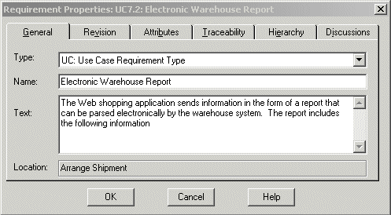
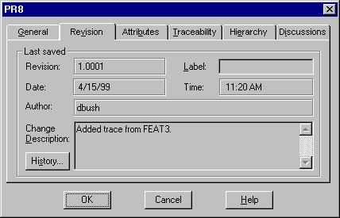
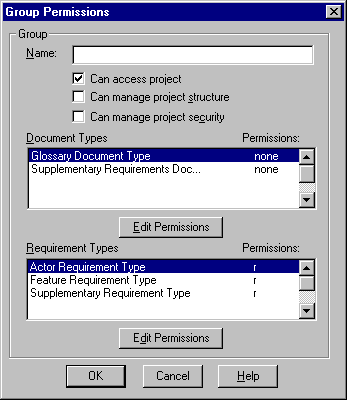
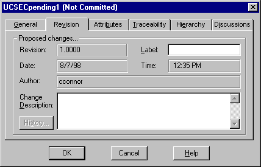

Tool Mentor:
Viewing Requirement History Using Rational RequisitePro
Purpose
This tool mentor tells how to view the history of a requirement in Rational
RequisitePro®.
Related Rational Unified Process information: Activity:
Establish Configuration Management (CM) Policies (refer to the step "Define
Configuration Status Reporting Requirements").
Overview
As requirements are modified, the requirement history allows you to keep
track of the what, when, why, and who of these
requirement changes. Requirement history provides the following information:
- How often do your requirements change? (Too much change too quickly may be
indicative of an ill-defined requirement.)
- Who modified a particular requirement? (You may want to consult that person
and understand his or her motives before validating or invalidating that
change.)
- Why has a requirement changed? (What is the rationale?)
- What caused a relationship between two requirements to become
"suspect"?
Knowing the history of a requirement is particularly useful during impact analysis,
when you are trying to determine whether a change to one requirement affects requirements
to which it is linked.
Tool Steps
This tool mentor introduces the following requirement history procedures:
- View the history of a requirement
- Perform an impact analysis
- Record the history of requirements
In RequisitePro, the history of a requirement is located in the Revision
tab of the Requirement Properties dialog box. This dialog box is
accessible from either the Microsoft ®Word document or a view.
In the Word document:
- Position your cursor in the text of a
requirement.
- Click RequisitePro > Requirement
> Properties. The Requirement Properties dialog box
appears.
In a view:
- Select the requirement row and do one of the following to open the
Requirement Properties dialog box:
- Right-click to display the
context-sensitive menu, and then click Properties from the pop-up
menu.
- From the toolbar, click Requirement > Properties.

- Do the following:
- Click the Revision tab. This pane displays the last
change made to that requirement. The date, time, author, and change
description (rationale for the change) are shown.
- Click the History button. The Revision History dialog box
displays all modifications made to that requirement since it was
created. RequisitePro automatically increases the Revision number as
modifications occur.

- Click a revision in the revisions list box to view details about that
revision.
- Click Print to print the set of revisions for that requirement.
Note: To print revisions pertaining to multiple
requirements, use Rational SoDA®, the Rational document automation tool, to
extract any set of revisions from the RequisitePro project and print a
Word or Adobe® FrameMaker document. Alternatively, open the read-only
RequisitePro database with an ODBC connection and use an off-the-shelf report to
query revisions on multiple requirements.
Reviewing the history of a requirement is an important step in impact
analysis. One of the reasons you set traceability links between requirements is
to have a means of flagging requirements that might be affected by a change in a
related requirement.
RequisitePro uses a suspect link to denote that the relationship
between two related requirements must be reexamined because one of the
requirements has been modified. A suspect link is visually represented in a
Traceability Matrix or a Traceability Tree with a red slash through a
traceability arrow. This indicator visually notifies users that the text or
attributes of a requirement have changed and that this change may affect
requirements that are traced to or from the modified requirement.
When a suspect link is displayed, you investigate what caused the suspect
link and what effects the change might have on other requirements. You view the
history of the two requirements involved in the suspect link, following the
steps outlined in the first section of this tool mentor (View
the history of a requirement). When you view the history of the modified
requirement, you may reach one of the following two conclusions:
- The modification to that requirement does not affect the linked
requirements. In this case, the suspect link can be cleared. To clear a
suspect link while you are in a traceability view, position your cursor on
the suspect link icon. Right-click to display the context-sensitive menu,
and select Clear Suspect.
- The modification affects the linked requirements. In this case, the
definition of the linked requirements must be updated to reflect the change
before the link is cleared.
To clear a suspect link while you are in a traceability view, double-click
the requirement that is affected. Then do one of the following:
- If the requirement was created in a RequisitePro document, RequisitePro
opens the document and positions the cursor on the requirement. Modify the
text of the requirement as necessary in light of the related modified
requirement, and then click RequisitePro > Document > Save to
commit your changes.
- If the requirement was created directly in a view, the Requirement
Properties dialog box appears. Modify the Text field, and click OK
to commit your change.
The following tips are related to the use of requirements history.
An important record in the requirement history is the author of the
requirement change. This author is the user logged into the RequisitePro project
at the time the requirement is modified. In order to record which user logs in,
you need to enable the RequisitePro project security.
By default, RequisitePro projects have security disabled. Even if you do not
want to set permissions for each project components (project, documents,
requirements, and so on), you should enable security so that you can assign user names to users.
These user names will be entered in the requirement revisions as a user creates
or modifies a requirement.
To enable security and create user names, do the following:
- Click File > Project Administration > Security. The Project
Security dialog box appears.
- Select the Enable security for this project check box.
To create user groups:
- Click on the Add button located in the Groups box (on left side of
the Project Security dialog box). The Group Permissions dialog box appears.
- Type a group name and define permissions for that group. Permissions can
be set for specific document types, requirement types, attributes, and
attribute values. You can also define whether this group of users can modify
the project structure. This can include permission to add attributes to
requirement types, add document types, and so forth.

To add an individual user:
- Select a group in the Groups list in the Project Security dialog box.
- Click the Add button located in the Users of Group box.
The Add User dialog box appears.
- Enter a Username (for example, John Smith); you have the option of
typing a password and e-mail address. E-mail
addresses are used when users participate in e-mail group
discussions.
RequisitePro allows you to delete requirements. This feature is useful when
you first create a project; you may want to experiment with how to use
RequisitePro and what level of detail you want to use for requirements. At some
point, you decide that your project is ready to be maintained as it is. From
that point on, you should keep track of every modification made in the project.
Be aware that when RequisitePro deletes requirements, every property of that
requirement is deleted, including its history; this is typically
information you do not want to lose. RequisitePro requires your confirmation
before deleting the requirement.
We recommend that you not delete a requirement using the Delete feature.
Instead, you can create an attribute (for example, Deleted or Inactive) to mark
requirements as "deleted" (or inactive). You can re-activate that
requirement later by simply changing the value of that attribute.
You might also want to relocate inactive requirements either to the bottom of
the document in which they appear or to the database (so that inactive
requirements do not appear in documents). To move requirements that are located
in the Word document (as opposed to those that are located only in a view), follow these steps:
- In the Word document, position your cursor in the requirement text.
- Click RequisitePro > Requirement > Cut.
- In the Explorer, click the Attribute Matrix in which you want to paste the
requirements, and then click Edit > Paste.
By default, RequisitePro maintains revisions of requirements, not traceability
links. To set RequisitePro to also maintain revisions of traceability links:
- Click Tools > Options.
- In the Traceability section, select the check box Changes
logged in history.
- Click OK.
To verify the traceability history log, open a Traceability Matrix. Add or remove a traceability link between two requirements.
Then select one of the requirements and click Requirements > Properties
to open the Requirement dialog box. At
the Revision tab, click History. The traceability change
appears in the Revision list.
As part of good requirement management process, we recommend that project
members record their reasons for changing requirements. RequisitePro provides a Change
Description field in which this information can be recorded.
The Change Description field is located on the Revision tab of the
Requirement Properties dialog box.

When you save a RequisitePro document containing requirements that have been
modified, RequisitePro displays the Change Notification dialog box for each
modified requirement. You can use the Apply to all modified requirements
in the document check box to attach the same Change Description
information to all modified requirements (for example, "per meeting with VP
on 5/30/2001").
It is very important to type a meaningful description in the Change
Description field, so that every requirement modification is fully captured
in the requirement history.
Copyright
© 1987 - 2001 Rational Software Corporation
|  Tool Mentors >
Tool Mentors >
 Rational RequisitePro Tool Mentors >
Rational RequisitePro Tool Mentors >
 Viewing Requirement History Using Rational RequisitePro
Viewing Requirement History Using Rational RequisitePro